La forma a partir de la tensión
Este proyecto se fundamenta en el principio de la tensegridad, donde las fuerzas de tensión y compresión operan en sinergia para lograr el equilibrio estructural. A partir de este concepto, se desarrolló un sistema de mobiliario modular, plegable y expansible que se adapta a las dinámicas del espacio. La propuesta se articula en tres módulos funcionales principales: áreas de descanso (con configuraciones para educadores y visitantes), soportes de exhibición y elementos de comunicación.
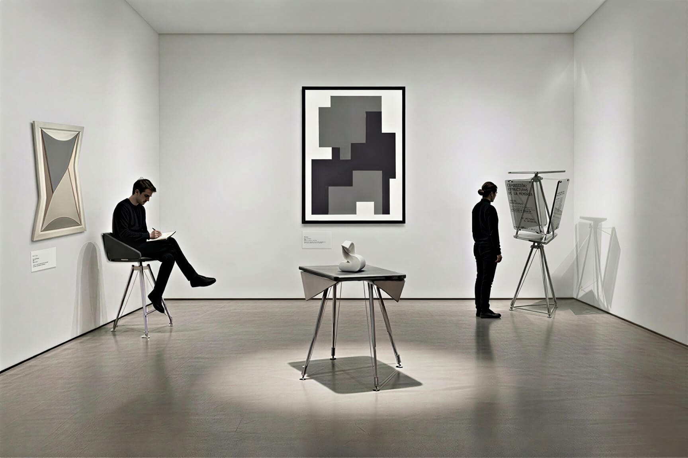
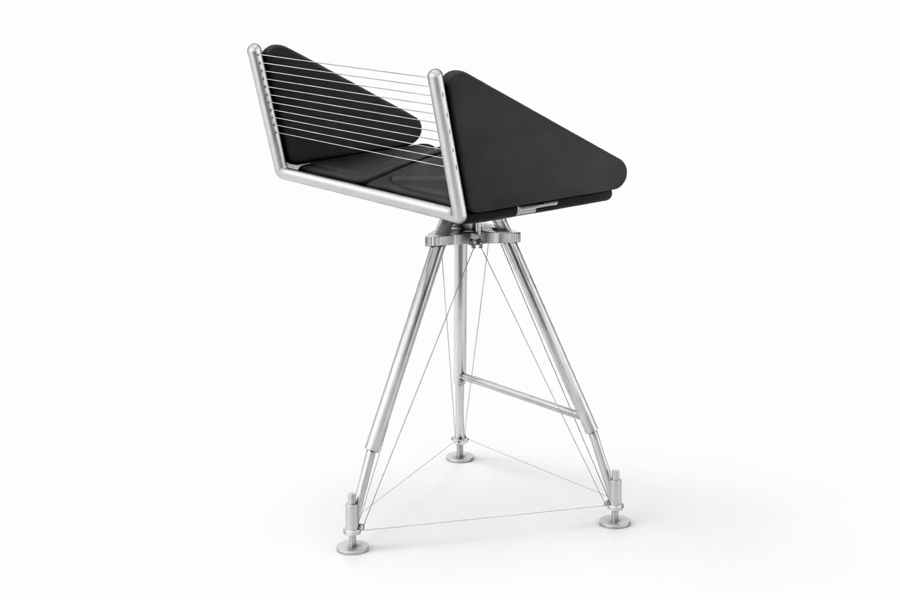
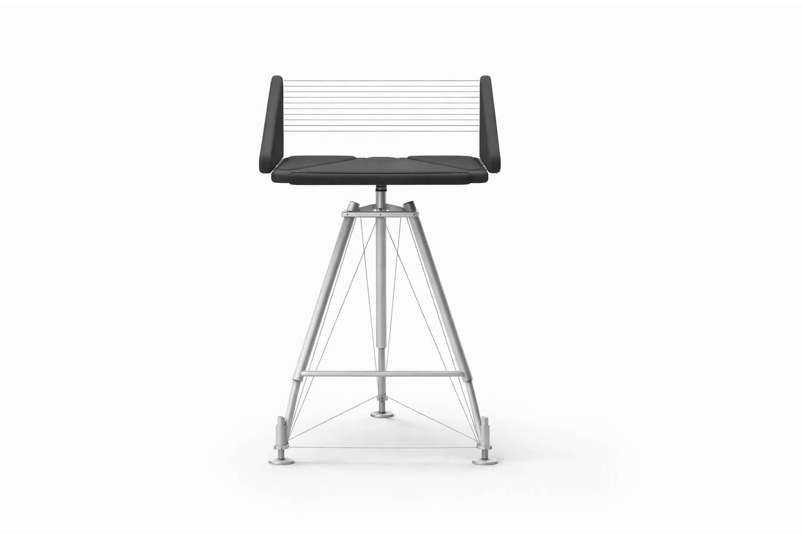
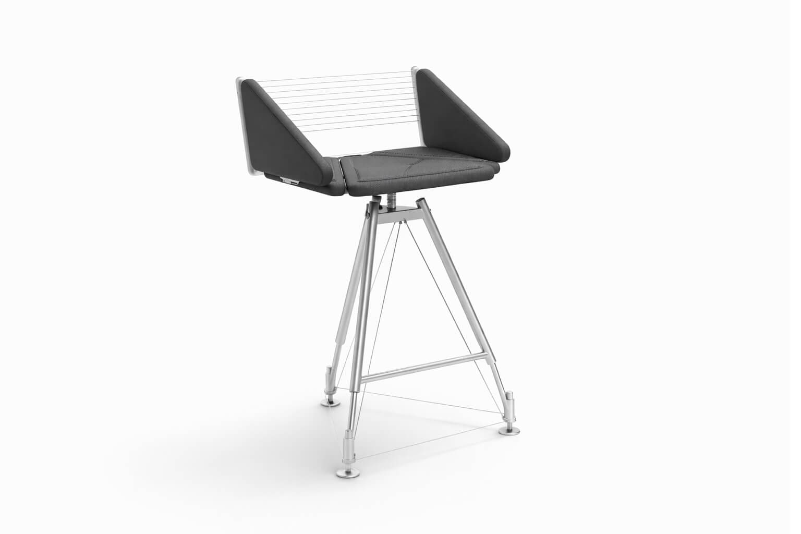
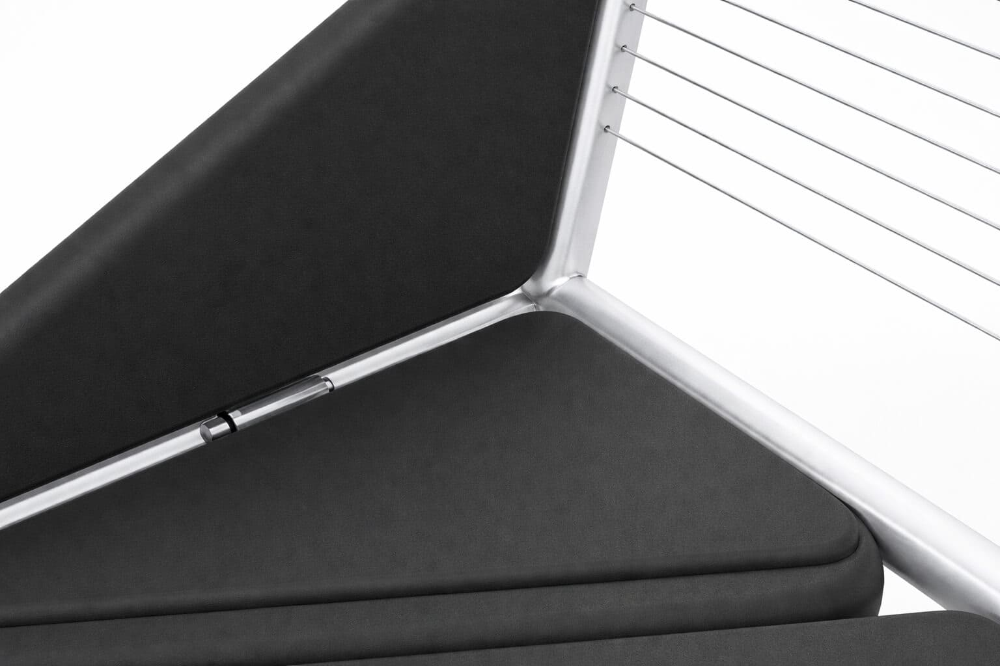
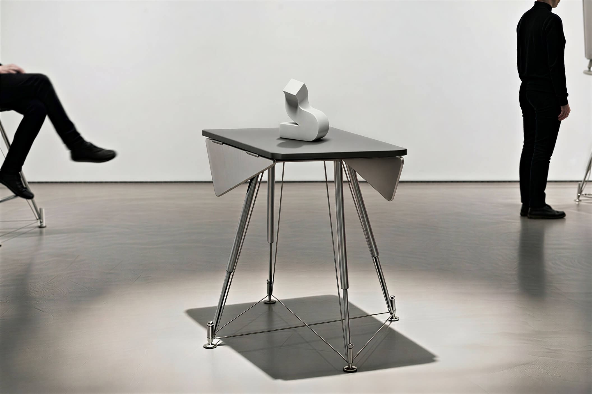
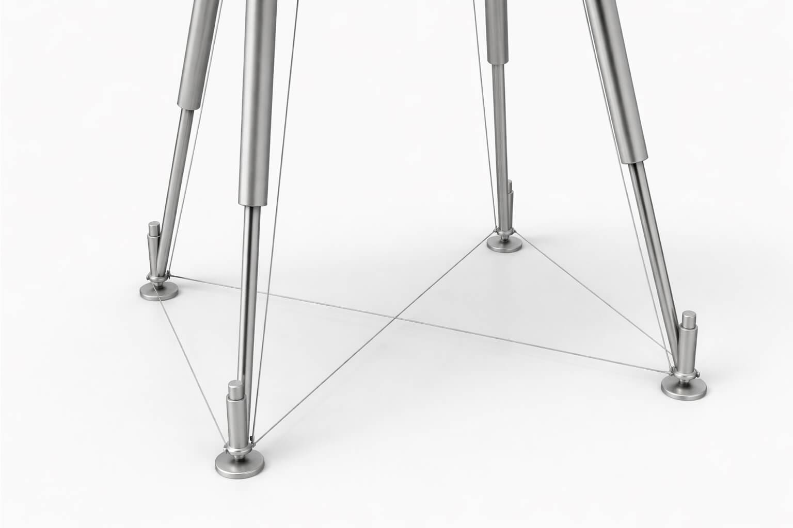
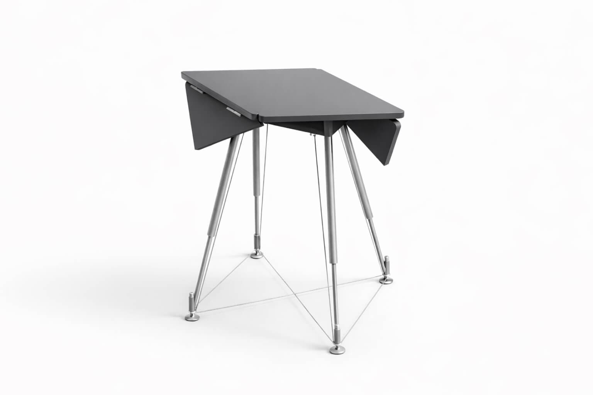
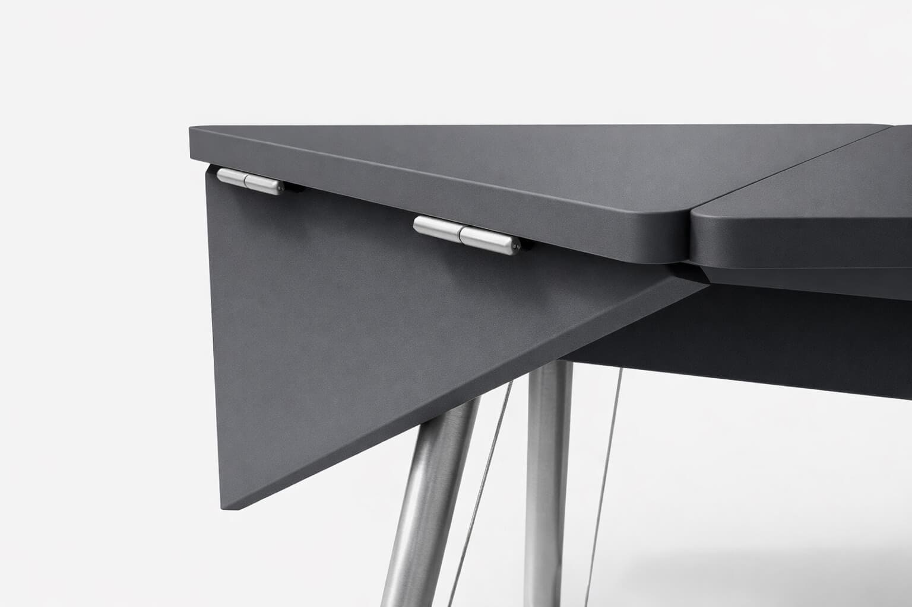
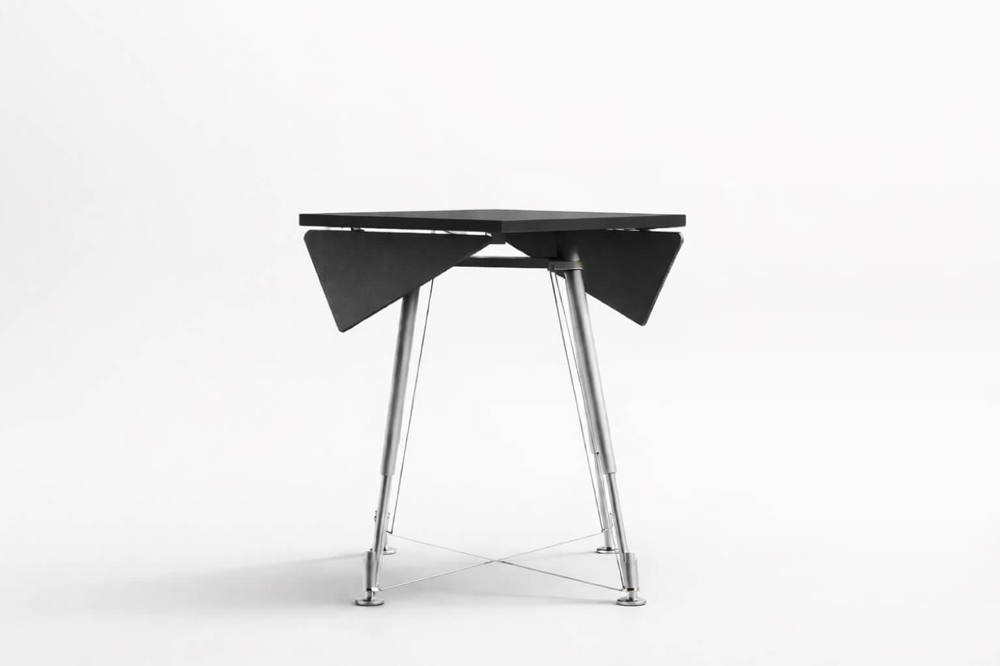
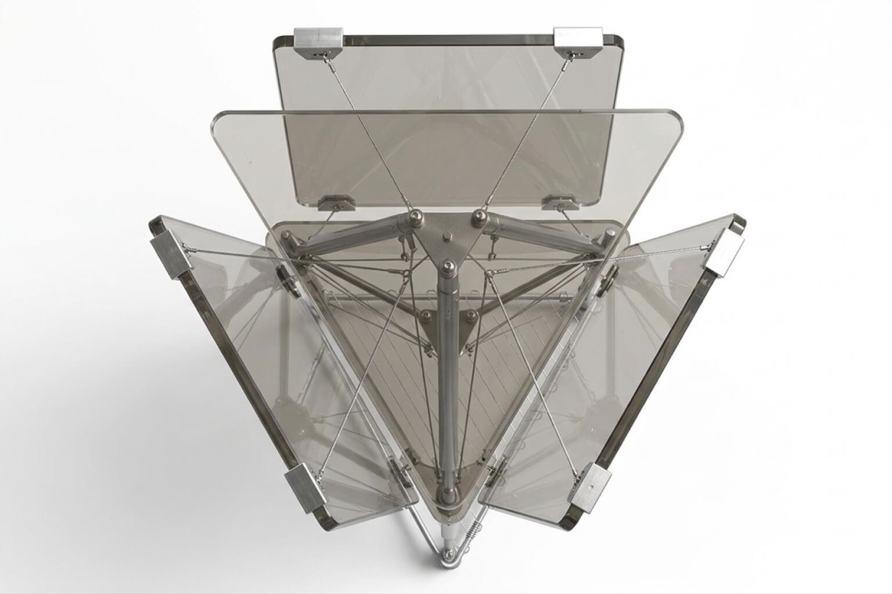
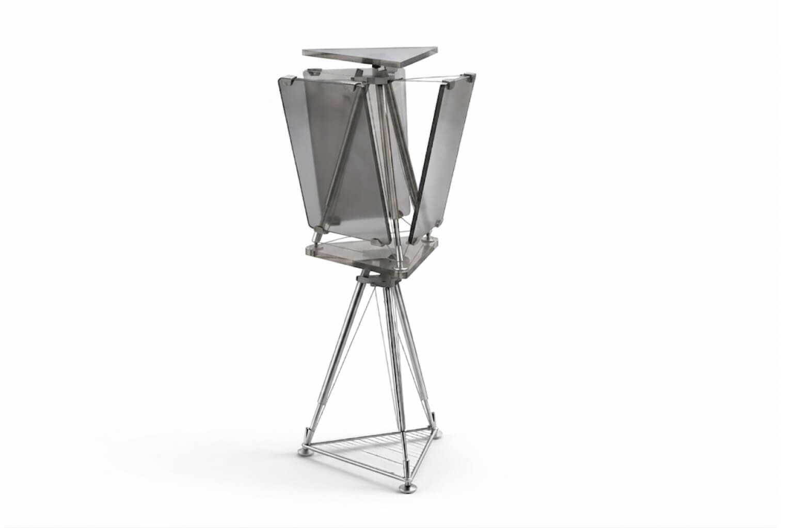
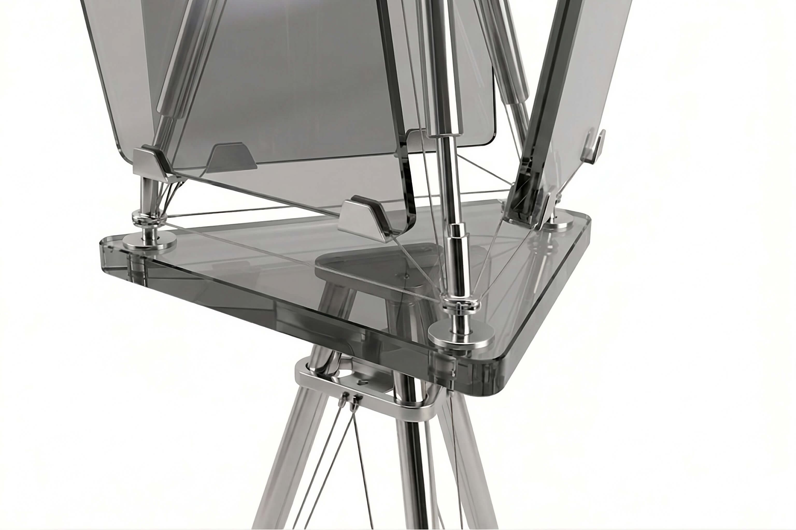
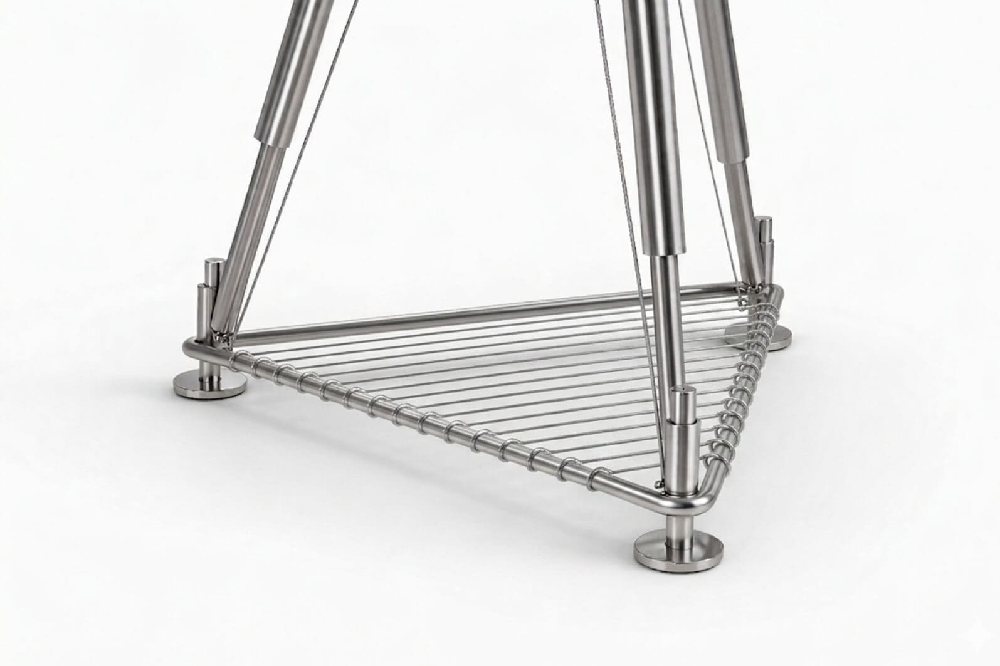